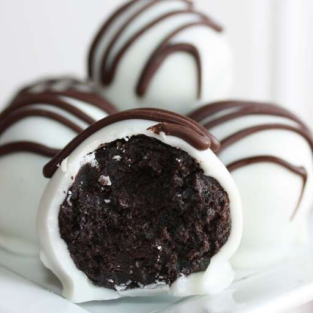

Cookie Balls

These cookie balls hardly require any cooking at all aside from melting the candy coating, so they're a great last-minute snack.
Ingredients
- 1 pound chocolate sandwich cookies, crushed
- 1 (8 ounce) package cream cheese, softened
- 1 pound vanilla-flavored candy coating, melted
Steps
- In a large mixing bowl, combine crushed cookies and cream cheese to form a stiff dough. Roll into balls and dip with a fork in melted candy coating.
- Let rest on waxed paper until set, about 30 minutes.